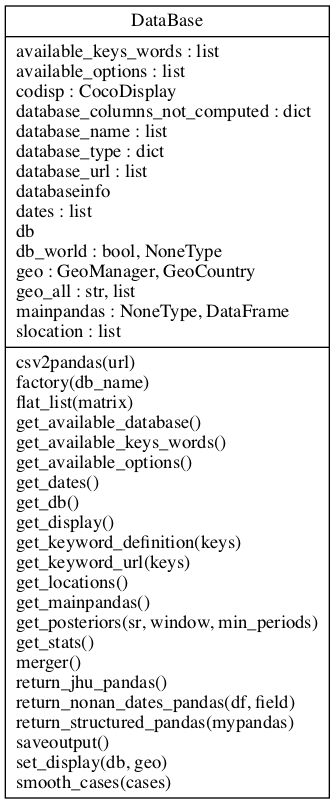

coa.covid19 module
Project : PyCoA Date : april 2020 - march 2021 Authors : Olivier Dadoun, Julien Browaeys, Tristan Beau Copyright ©pycoa.fr License: See joint LICENSE file
Module : coa.covid19
About :
Main class definitions for covid19 dataset access. Currently, we are only using the JHU CSSE data. The parser class gives a simplier access through an already filled dict of data
Summary
Classes:
DataBase class Parse a Covid-19 database and filled the pandas python objet : mainpandas It takes a string argument, which can be: 'jhu','spf', 'spfnational','owid', 'opencovid19' and 'opencovid19national' |
Class diagram:
{kind=link}
Reference
- class DataBase(db_name)[source]
Bases:
objectDataBase class Parse a Covid-19 database and filled the pandas python objet : mainpandas It takes a string argument, which can be: ‘jhu’,’spf’, ‘spfnational’,’owid’, ‘opencovid19’ and ‘opencovid19national’
- static factory(db_name)[source]
Return an instance to DataBase and to CocoDisplay methods This is recommended to avoid mismatch in labeled figures
- get_available_keys_words()[source]
Return all the available keyswords for the database selected Key-words are for: - jhu : [‘deaths’,’confirmed’,’recovered’]
the data are cumulative i.e for a date it represents the total cases
For more information please have a look to https://github.com/CSSEGISandData/COVID-19/tree/master/csse_covid_19_data
- ‘owid’[‘total_deaths’,’total_cases’,’reproduction_rate’,’icu_patients’,’hosp_patients’,’total_tests’,
‘positive_rate’,’total_vaccinations’]
For more information please have a look to https://github.com/owid/covid-19-data/tree/master/public/data/ - ‘spf’ : [‘hosp’, ‘rea’, ‘rad’, ‘dc’, ‘incid_hosp’, ‘incid_rea’, ‘incid_dc’,
‘incid_rad’, ‘P’, ‘T’, ‘tx_incid’, ‘R’, ‘taux_occupation_sae’, ‘tx_pos’]
No translation have been done for french keywords data
For more information please have a look to https://www.data.gouv.fr/fr/organizations/sante-publique-france/ - ‘opencovid19’ :[‘cas_confirmes’, ‘deces’, ‘reanimation’, ‘hospitalises’,’nouvelles_hospitalisations’, ‘nouvelles_reanimations’, ‘gueris’, ‘depistes’] - ‘opencovid19national’ :[‘cas_confirmes’, ‘cas_ehpad’, ‘cas_confirmes_ehpad’, ‘cas_possibles_ehpad’, ‘deces’, ‘deces_ehpad’, ‘reanimation’, ‘hospitalises’,’nouvelles_hospitalisations’, ‘nouvelles_reanimations’, ‘gueris’, ‘depistes’]
No translation have been done for french keywords data For more information please have a look to https://github.com/opencovid19-fr
- get_db()[source]
Return the current covid19 database selected. See get_available_database() for full list
- get_locations()[source]
Return available location countries / regions in the current database Using the geo method standardization
- get_mainpandas(**kwargs)[source]
- defaut :
location = None
date = None
selected_col = None
Return the csv file to the mainpandas structure index | location | date | keywords1 | keywords2 | …| keywordsn —————————————————————————————– 0 | location1 | 1 | l1-val1-1 | l1-val2-1 | …| l1-valn-1 1 | location1 | 2 | l1-val1-2 | l1-val2-2 | …| l1-valn-2 2 | location1 | 3 | l1-val1-3 | l1-val2-3 | …| l1-valn-3
…
p | locationp | 1 | lp-val1-1 | lp-val2-1 | …| lp-valn-1 …
location : list of location (None : all location)
date : latest date to retrieve (None : max date)
- selected_col: column to keep according to get_available_keys_words (Noneall get_available_keys_words)
N.B. location column is added
- get_stats(**kwargs)[source]
- Return the pandas pandas_datase
index: only an incremental value
location: list of location used in the database selected (using geo standardization)
- ‘which’return the keyword values selected from the avalailable keywords keepted seems
self.get_available_keys_words()
- ‘option’ :default none
- ‘nonneg’ In some cases negatives values can appeared due to a database updated, nonneg option
will smooth the curve during all the period considered
‘nofillnan’ if you do not want that NaN values are filled, which is the default behaviour
‘smooth7’ moving average, window of 7 days
‘sumall’ sum data over all locations
- keys are keyswords from the selected database
location1 | 1 | val1-1 | daily1-1 | diff1-1 location1 | 2 | val1-2 | daily1-2 | diff1-2 location1 | 3 | val1-3 | daily1-3 | diff1-3
… … …
- location1 | last-date | val1-lastdate | cumul1-lastdate | diff1-lastdate
…
location-i | 1 | vali-1 | dailyi-1 | diffi-1 location-i | 2 | vali-1 | daily1i-2 | diffi-2 location-i | 3 | vali-1 | daily1i-3 | diffi-3
…
- merger(**kwargs)[source]
Merge two or more pycoa pandas from get_stats operation ‘coapandas’: list (min 2D) of pandas from stats ‘whichcol’: list variable associate to the coapandas list to be retrieve
- return_jhu_pandas()[source]
For center for Systems Science and Engineering (CSSE) at Johns Hopkins University COVID-19 Data Repository by the see homepage: https://github.com/CSSEGISandData/COVID-19 return a structure : pandas location - date - keywords for jhu location are countries (location uses geo standard) for jhu-usa location are Province_State (location uses geo standard)
- return_nonan_dates_pandas(df=None, field=None)[source]
Check if for last date all values are nan, if yes check previous date and loop until false
- return_structured_pandas(mypandas, **kwargs)[source]
Return the mainpandas core of the PyCoA structure